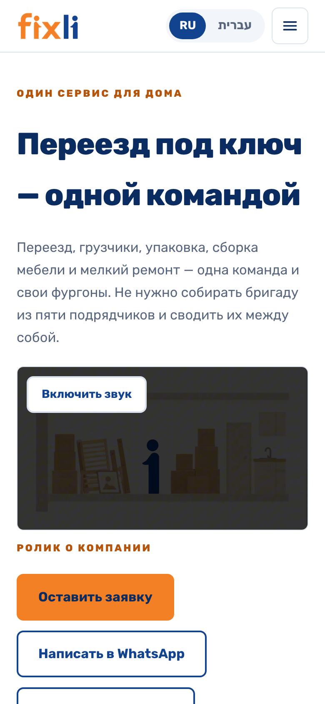
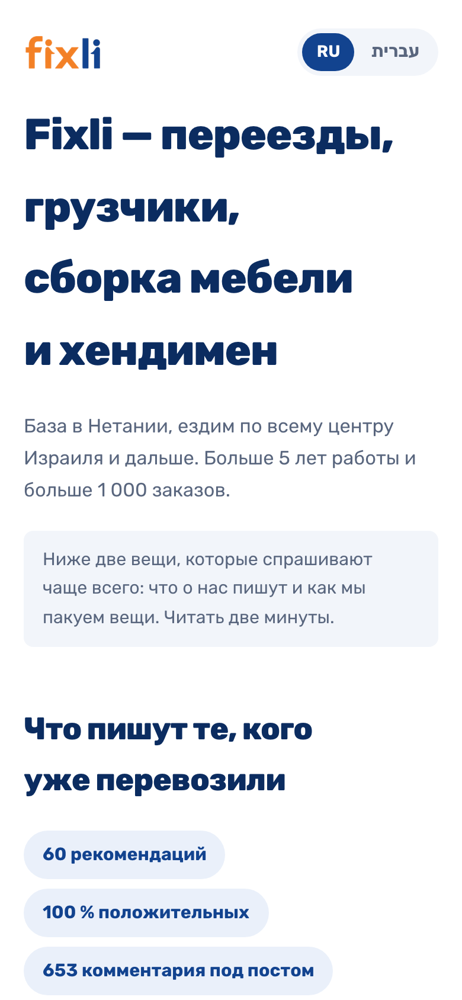
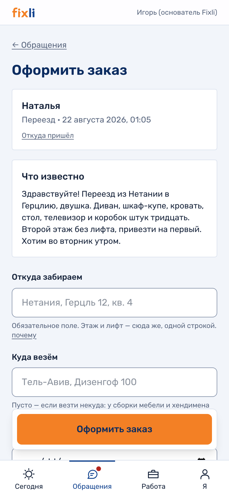
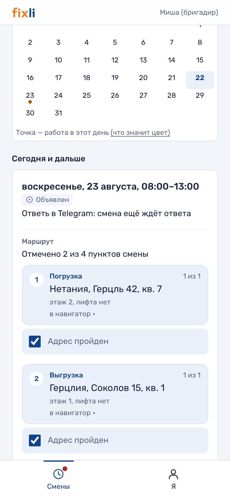

Переезды, сервис и решения для дома под одним брендом
Действующий прибыльный бизнес: около трёх лет непрерывной работы,
собственный бренд и цифровая платформа. Материал для обсуждения финансирования роста.
~3 годанепрерывной работы под брендом «Перевозки по Нетании»
30–50заказов в месяц: около 30 вне сезона, около 50 летом
60–100 тыс. ₪месячная выручка: вне сезона и в сезон
Это не стартап с презентацией вместо бизнеса. Компания возит,
собирает и чинит каждый день — финансирование масштабирует то, что уже приносит деньги.
Около 3 лет непрерывной работы
Бизнес работал под брендом «Перевозки по Нетании» и продолжает под брендом Fixli.
Юридическая база — действующий зарегистрированный бизнес с НДС.
Более 13 лет совокупного управленческого опыта
Дима — около 3 лет в перевозках; Егор — около 10 лет в развитии, продажах
и операционной работе.
Операционная инфраструктура в собственности
Mercedes Sprinter, профессиональный инструмент, 5 постоянно задействованных человек
и проверенный резерв сотрудников.
Экосистема услуг вокруг переезда
Перевозки, упаковка, доставка мебели, хендимен, покраска и уборка — под единым
брендом и одним процессом продаж. Один клиент — несколько продаж.
Собственные вложения и активы, уже работающие в бизнесе
SprinterMercedes в собственности
30 тыс. ₪профессиональный инструмент
60 тыс. ₪реклама Facebook за 3 года
10 тыс. ₪бренд, логотип и айдентика
60 тыс. ₪свободные собственные средства
Показатели
Фактические показатели
Бизнес сезонный: лето даёт пик переездов. Переключите — числа
ниже покажут оба режима работы.
60 тыс. ₪месячная выручка
~30заказов в месяц
~2 000 ₪средний чек — выводится из фактической выручки и числа заказов
до ~50%операционный остаток до налогов, амортизации и крупного ремонта*
* Показатель основан на активном участии владельцев бизнеса в выполнении заказов.
60 рекомендацийв Facebook — 100 % положительных
653 комментарияпод публикациями компании
Клиенты возвращаютсявысокая доля повторных заказов и рекомендаций
Бренд
Бренд построен целиком — и уже ездит по городу
Знак, транспорт, форма бригады, печатные документы и реклама —
одна система, зафиксированная в брендбуке. В нише, где конкурируют объявлениями,
это редкий актив.
В знаке — суть бизнеса. Две фигуры идут навстречу друг другу: оранжевая —
работник, синяя — клиент. Буква x между ними — знак умножения:
работник × клиент.
IT-инфраструктура, которой нет у локальных конкурентов
Сайт на двух языках, онлайн-расчёт цены, собственная CRM
и автоответы в мессенджерах — полный контур от рекламы до отчёта «какой канал окупился».
Всё уже построено и работает.
Сайт — fixlihome.co.il
Два языка: русский и иврит, включая RTL-вёрстку
Фирменный анимационный ролик на первом экране
Скорость и качество: Lighthouse 99–100 из 100
Страница-знакомство для клиентов из рекламы
Нажмите на любой экран — страница откроется живьём прямо здесь, с боевого сайта.

Главная: ролик запускается сам, услуги и расчёт ·
в новой вкладке

Страница-знакомство: доказательства и отзывы ·
в новой вкладке
Калькулятор: клиент видит цену до первого контакта
Он живой и работает прямо здесь —
это боевой сайт, а не макет. Отметьте вещи по комнатам и увидите вилку цены,
часы работы и состав бригады.
Живой калькулятор — считает настоящими ценами компании
Цена до первого контактаНа рынке центра Израиля так не делает почти никто:
обычно цену называют по телефону или на месте.
Модель на реальных заказахОткалибрована на 40 просчётах компании;
вилка ±12 %, а где данных мало — честно говорит «посчитает менеджер».
Расчёт уезжает в заявкуМенеджер видит состав, часы и цену — не переспрашивает
то, что клиент уже ввёл.
Тот же расчёт в Telegram-ботеОдин движок на три канала: две страницы сайта
и бот не могут показать за один заказ разные цены.
CRM: путь заказа от обращения до отчёта
Собственная система управления:
каждое обращение фиксируется с источником, наряд уходит бригаде в Telegram, а в конце месяца
видно, какая реклама окупилась — до шекеля. Нажимайте шаги — справа настоящие экраны системы.


Ни одно обращение не теряется
WhatsApp
Приветствие отвечает каждому новому клиенту сразу и ведёт на страницу-знакомство
Messenger
Автоответ людям с рекламы Facebook — раньше эти обращения ждали днями
Telegram-бот
Проводит опрос и показывает клиенту ту же цену, что калькулятор сайта
Уведомления
Заявка с сайта доходит до менеджера в Telegram за полминуты
Резюме
Почему это сработает
Не стартап, а работающий бизнес
Денежный поток 60–100 тыс. ₪ в месяц уже есть. Команда собрана, клиенты
рекомендуют, сезонность известна по трём годам работы.
Инфраструктура роста уже построена
Бренд, сайт, калькулятор, CRM и автоответы готовы и оплачены. Финансирование
не тратится на «подготовку» — только на то, что напрямую растит выручку.
Деньги идут в узкое место
Ограничитель сегодня — один автомобиль и одна бригада. Второй автомобиль
и вторая бригада удваивают пропускную способность при готовом потоке заказов.
Финансирование
Запрос на финансирование и контролируемый план роста
Сначала транспорт и команда, затем масштабирование рекламы —
так снижается операционный риск.
200 000 ₪запрос на 60 месяцев
60 000 ₪собственный вклад
5–7 тыс. ₪комфортный платёж в месяц
Структура финансирования: общий бюджет проекта — 260 000 ₪
Кредит — 200 тыс. ₪ (77%)Свои — 60 тыс. ₪
Кредит — 200 тыс. ₪ (77%)Свои — 60 тыс. ₪ (23%)
План использования бюджета
Наведите на полосу или выберите статью — увидите её долю.
Расширение автопарка и приобретение транспорта70 тыс. ₪
Брендирование и оснащение автомобилей20 тыс. ₪
Сайт и цифровая инфраструктура продаж8 тыс. ₪
AI, CRM и автоматизация процессов40 тыс. ₪
Стартовый рекламный бюджет25 тыс. ₪
Оборотные средства и резерв ликвидности97 тыс. ₪
Распределение между первоначальным взносом по лизингу и покупкой сервисного
микроавтобуса уточняется после одобрения и выбора автомобиля.
План роста и источник возврата
60–100 тыс. ₪Сейчас
Действующий бизнес с одним автомобилем
30–50 заказов в месяц; работающая перевозочная и сервисная команда.
цель 200 тыс. ₪6–9 месяцев
Два автомобиля и две перевозочные бригады
Хендимен, покраска и уборка — как дополнительные продажи тем же клиентам.
от 150 тыс. ₪Уровень прибыльности
Покрытие лизинга, зарплат, страховок и рекламы
По действующей операционной модели бизнеса.
300–400 тыс. ₪Сезонный потенциал
Дополнительная загрузка в летние месяцы
Не используется как база для расчёта возврата — только запас прочности.
Модель загрузки большого грузовика: 2–3 дня доставки премиальной
мебели + 2–3 дня перевозок еженедельно.
Текущая кредитная дисциплина: остаток около 25 тыс. ₪,
платёж около 1,2 тыс. ₪ в месяц, без просрочек.
Стратегия
Стратегия развития группы
План за горизонтом первого года. Это не список желаний:
каждое направление включается после того, как предыдущий этап вышел на устойчивый
поток, и опирается на уже построенное — бренд, команду и цифровую платформу.
Свои команды, а не маркетплейс
Каждое направление выполняют собственные контролируемые бригады под стандартом
качества Fixli. Перед клиентом отвечает компания, а не случайный подрядчик —
это и есть бренд.
AI — инфраструктура, а не лозунг
Автоответы, бот опроса и онлайн-расчёт уже отвечают клиенту раньше конкурентов.
Следующий слой — агенты продаж, постпродажного контакта и контроля качества:
каждый следующий заказ обходится дешевле предыдущего.
Один клиент — много продаж
Переезд — точка входа. Дальше тот же клиент заказывает сборку, мелкий ремонт,
покраску и уборку: база выполненных заказов превращается в постоянный спрос,
который не нужно покупать рекламой.
Этапы: от сервисной компании к технологической
Этап 1 · Экосистема услуг
Флагманский продукт — комплексный переезд
«Старая квартира готова к сдаче. Новая — к жизни»: упаковка, перевозка, сборка,
мелкий ремонт, покраска и уборка — один подрядчик на весь цикл вместо пяти
исполнителей. Рядом — линейка Fixli Moving · Handyman · Painting и возврат
к накопленной базе клиентов: за время работы выполнено больше 1 000 заказов,
и постоянные клиенты принимают цену охотнее новых.
Этап 2 · Низкая операционная нагрузка
Склад, хранение и аутлет премиальной мебели
Доставка премиальной мебели с монтажом открывает вход в B2B и в премиальные
дома — сначала как репутация, затем как частные заказы. Следующий шаг — услуга
хранения и аутлет мебели с мелкими дефектами: у мебельных сетей на складах лежит
непродаваемый товар, а перевозчик, который его возит, может его и продавать.
Этап 3 · Технологическая компания
Маршрутная доставка и AI-платформа как продукт
Попутная междугородняя доставка через маршрутные машины и точки хранения:
перевозка вещей между городами по цене городской — предложение, которое меняет
структуру рынка, а не делит его. Параллельно AI-операционная система, отработанная
на Fixli, упаковывается в продукт для других сервисных компаний.
Ни один из этих этапов не входит в расчёт возврата финансирования —
план возврата стоит на действующей операционной модели из раздела выше.